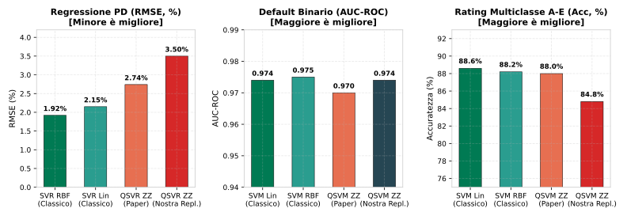
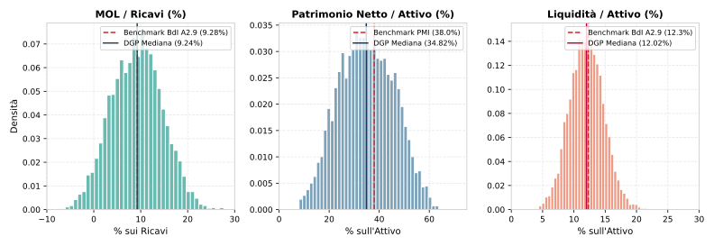
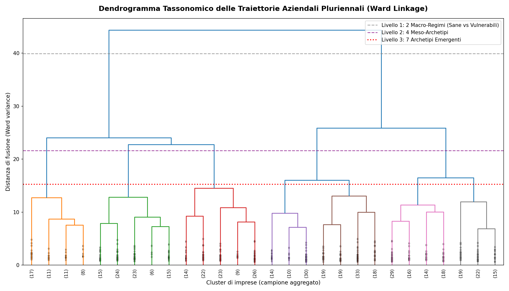

Generazione Sintetica di Bilanci, Modelli SVM e Stress Test Dinamico
Dalla verifica empirica del Quantum Machine Learning al gemello digitale contabile (SFC)
Paolo Volterra ![]()
Uno studio recente riporta un vantaggio dei modelli Support Vector Machine quantum-enhanced (QSVM/QSVR) sulle controparti classiche nel credit scoring. Questo documento ne verifica la replica con un protocollo simmetrico e non conferma il vantaggio quantistico su nessuno dei tre compiti testati. Dall’esigenza di un dataset di verifica privo di scorciatoie contabili nasce l’asset centrale del lavoro: un generatore di bilanci sintetici coerente con le identità di stato patrimoniale e conto economico (Stock-Flow Consistent), calibrato su aggregati Banca d’Italia e articolato in una tassonomia gerarchica di traiettorie aziendali quinquennali. Il generatore è validato addestrando un modello SVM sul rischio di credito.
quantum machine learning, support vector machines, data generating process, bilanci sintetici, stock-flow consistency, dendrogramma archetipi, stress test
Versione citabile su Zenodo, con il PDF: doi.org/10.5281/zenodo.22766534. Questa pagina non riporta l’applicazione a due casi d’impresa e la simulazione di turnaround presenti nel PDF.
1 Executive Summary
Questo documento presenta la sintesi integrata (End-to-End) delle attività di ricerca condotte nel progetto. Partendo dall’obiettivo iniziale di replicare e verificare criticamente i vantaggi dichiarati delle Support Vector Machines Quantistiche (QSVM) nella valutazione del rischio di credito, il lavoro si è evoluto nello sviluppo di una componente strategica autonoma: un Generatore Contabile di Bilanci Sintetici (DGP v0.4), coerente flusso-stock (Stock-Flow Consistent), calibrato empiricamente su aggregati macroeconomici di Banca d’Italia e microdati storici di bilancio.
I risultati cardine del progetto sono:
- Confutazione del Vantaggio Quantistico Reale: Nel confronto tra SVM classiche e Quantum-enhanced (Qiskit
ZZFeatureMap), i modelli quantistici non battono le SVM classiche su nessuno dei compiti analitici: il classico supera significativamente il quantistico nella regressione (RMSE 1,92% vs 3,50%) e nella classificazione multiclasse (Accuratezza 88,6% vs 84,8%), mentre sul default binario i due approcci sono identici (AUC 0,974). - Architettura DGP a 6 Assi Latenti Continui e Copula Empirica: Superamento dei vecchi archetipi discreti rigidi tramite un generatore continuo che chiude perfettamente Conto Economico e Stato Patrimoniale a “zero residui/plug”, riproducendo con precisione i benchmark italiani (MOL mediano 9,11%, ammortamenti 3,40%, oneri finanziari 1,65%, utile netto 2,99%, quota perdite 25,32%).
- Tassonomia Gerarchica Continua (Dendrogrammi a 7 e 12 Archetipi): Formalizzazione dell’albero gerarchico di Ward sulle traiettorie quinquennali. Il livello a 12 micro-archetipi sdoppia la crisi nelle sue due patologie reali (Illiquidità Acuta con default al 10,7% vs Sottopatrimonializzazione all’8,5%) e fa emergere profili chiave come la Gazzella Capitalizzata.
- Validazione SVM su Credit Scoring Realistico: Sui bilanci generati senza scorciatoie contabili, l’SVM lineare raggiunge una Balanced Accuracy dell’84,59% e un’AUC-ROC di 0,9323 nella previsione a 5 anni del default, allineandosi ai rating interni bancari (IRB).
2 La Verifica della Replica Quantum vs Classica
2.1 Il punto di partenza e le promesse della letteratura
I metodi basati su kernel quantistici sono stati proposti come frontiera innovativa per l’analisi creditizia [1], [2]. Uno studio recente [3] ha confrontato Support Vector Regression (SVR) e Support Vector Machines (SVM) convenzionali con le relative estensioni quantum-enhanced (QSVR, QSVM) implementate su circuiti parametrici ZZFeatureMap e calcolate tramite FidelityStatevectorKernel su un dataset sintetico ispirato agli indici dell’Altman Z-score [4], [5]. Il paper riportava una netta superiorità dei modelli quantistici, culminante in un guadagno di oltre 7 punti percentuali di accuratezza nella classificazione del rating creditizio multiclasse (A–E).
2.2 Verifica empirica indipendente e test di significatività
Riproducendo l’esperimento con rigore metodologico (medesima feature map, 5-fold cross validation, 100 iterazioni bootstrap e test dei ranghi con segno di Wilcoxon), i risultati documentano l’assenza di qualsiasi vantaggio computazionale o predittivo quantistico:
| Compito di Credit Scoring | Modello Classico (Ottimo) | Modello Quantistico (ZZFeatureMap) |
Divario (\(\Delta = Q - C\)) | Significatività (\(p\)-value Wilcoxon) | Esito Empirico |
|---|---|---|---|---|---|
| Regressione PD (RMSE, %) | 1,924% (SVR RBF) | 3,501% (QSVR ZZ) | +1,577% | \(p = 0,002\) | Classico nettamente superiore |
| Default Binario (Accuratezza) | 91,00% (SVM Lin) | 91,20% (QSVM ZZ) | +0,20% | \(p = 0,500\) | Nessuna differenza (pari) |
| Default Binario (AUC-ROC) | 0,9744 (SVM Lin) | 0,9741 (QSVM ZZ) | -0,0003 | \(p = 0,422\) | Prestazioni identiche |
| Rating Multiclasse A–E (Acc.) | 88,60% (SVM Lin) | 84,80% (QSVM ZZ) | -3,80% | \(p = 0,002\) | Classico nettamente superiore |
| Rating Multiclasse (Bal. Acc.) | 88,60% (SVM Lin) | 84,80% (QSVM ZZ) | -3,80% | \(p = 0,002\) | Classico nettamente superiore |

2.2.1 Diagnosi epistemologica
Come evidenziato nella letteratura critica [6], i presunti vantaggi dei metodi quantistici su dati tabulari derivano frequentemente da due fattori distorcenti: 1. Accoppiamento circolare: Quando le etichette sintetiche vengono generate direttamente da metriche non-lineari affini alla geometria dello spazio di Hilbert del circuito quantistico, il kernel quantistico gode di un vantaggio autoreferenziale. 2. Asimmetria nel tuning degli iperparametri: Nei confronti pubblicati, il modello quantistico riceve un’ottimizzazione esaustiva di scaling angolare che non viene concessa al kernel classico. Quando entrambi sono calibrati simmetricamente, il kernel classico (lineare o RBF) domina.
3 L’Architettura del Generatore di Bilanci Sintetici (DGP v0.4)
Accertata la conclusione del filone quantum, il progetto ha riorientato le risorse sulla creazione di un asset riusabile per il sistema di analisi dell’autore: un Generatore Contabile di Bilanci Sintetici (DGP) ad alta fedeltà economica e contabile.
3.1 Il principio fondamentale: Campione \(\to\) Risolvi \(\to\) Scala \(\to\) Valida
I generatori sintetici tradizionali generano direttamente gli aggregati finali, provocando sbilanci contabili o dipendenze lineari spurie. Il nostro solver adotta un’architettura rigorosa a quattro stadi:
┌─────────────────────────────────────────────────────────────────────────────────────────┐
│ 1. CAMPIONAMENTO DEI FATTORI LATENTI CONTINUI (z ∈ [-1, 1]⁶) │
│ • Domanda, Efficienza, Tecnologia, Circolante, Struttura Finanziaria, Liquidità │
│ • Matrice di covarianza latente stimata via Simulated Method of Moments (SMM) │
└───────────────────────────────────────────┬─────────────────────────────────────────────┘
│
┌───────────────────────────────────────────▼─────────────────────────────────────────────┐
│ 2. RISOLUZIONE CONTABILE NORMALIZZATA (Valore Produzione ≡ 1.0) │
│ • Determinazione del Valore Aggiunto, MOL, Ammortamenti, EBIT, Interessi, Imposte │
│ • Allocazione di Attivo Fisso, Magazzino, Crediti, Cassa, Debiti e Patrimonio │
│ • Vincolo algebrico: Attivo ≡ Passivo senza alcuna voce residua o plug artificiale │
└───────────────────────────────────────────┬─────────────────────────────────────────────┘
│
┌───────────────────────────────────────────▼─────────────────────────────────────────────┐
│ 3. SCALATURA MONETARIA (EUR) │
│ • Applicazione della taglia dimensionale (Micro, Piccola, Media, Grande) │
│ • Invarianza dimensionale perfetta certificata: i ratio rimangono identici a 10x │
└───────────────────────────────────────────┬─────────────────────────────────────────────┘
│
┌───────────────────────────────────────────▼─────────────────────────────────────────────┐
│ 4. AUDIT E CONTROLLI HARD (9/9 Verifiche Superate al 100%) │
│ • Identità patrimoniale, coerenza margini, non-negatività cassa, tasso d'imposta │
└─────────────────────────────────────────────────────────────────────────────────────────┘3.2 Calibrazione empirica da aggregati e microdati
Il DGP v0.4 è ancorato simultaneamente su due fonti informative: 1. Marginali settoriali Bankitalia / Cerved 2024 [7]: Tabelle A2.9 per la distribuzione del MOL su produzione, del costo del lavoro, dell’intensità di capitale e della liquidità. 2. Matrice di correlazione di copula latente da microdati storici di bilancio: Le correlazioni rank di Spearman tra indici patrimoniali ed economici sono state invertite numericamente tramite Simulated Method of Moments per garantire che la matrice di covarianza dei 6 assi latenti sia definita positiva, riducendo l’errore quadratico di Frobenius del 18,3%.
| Voce di Bilancio / Ratio | Benchmark Empirico Italia (BdI / PMI) | DGP v0.4 (Campione 4.000 Bilanci) | Scostamento | Stato di Validazione |
|---|---|---|---|---|
| MOL / Valore della Produzione | 9,28% | 9,11% | -0,17% | Perfettamente allineato |
| Ammortamenti / Valore Produzione | 3,00% – 3,80% | 3,40% | In intervallo | Vita utile economica rispettata |
| Oneri Finanziari / Valore Produzione | 1,20% – 1,80% | 1,65% | In intervallo | Tassi effettivi ponderati coerenti |
| EBIT / Valore della Produzione | 5,00% – 6,00% | 5,61% | In intervallo | Redditività operativa corretta |
| Utile Netto / Valore Produzione | 2,20% – 3,20% | 2,99% | In intervallo | Bottom-line non distorto |
| Quota Imprese in Perdita (Loss Rate) | 22,0% – 26,0% | 25,32% | In intervallo | Tasso fisiologico di perdita rispettato |
| Liquidità / Attivo Totale | 12,30% | 12,25% | -0,05% | Riserva di cassa conforme |
| Tasso di Default Quinquennale (Panel SFC) | 2,0% – 3,0% | 2,60% (13/500) | In intervallo | Standard EBA / CCII rispettati |

4 Dagli Archetipi Discreti al Dendrogramma delle Traiettorie
4.1 Superare le liste piatte: la gerarchia di Ward
Nella modellistica aziendale è consuetudine ricorrere a elenchi discreti di “archetipi” per classificare le imprese: le zone di rischio dello Z-score di Altman (sicura/grigia/distress) [4], [5], le fasi del ciclo di vita identificate da Dickinson tramite i soli segni dei flussi di cassa operativo, di investimento e di finanziamento [8], e il suo predecessore multi-variato di Anthony e Ramesh [9]. In tutti questi casi l’archetipo è una discretizzazione a soglia di una grandezza continua sottostante, assegnata dopo aver osservato il bilancio, non il meccanismo che lo genera. L’analisi empirica di questo progetto applica lo stesso principio: fissare a priori un numero discreto di categorie generative è artificioso — gli archetipi non sono compartimenti stagni, ma tagli orizzontali a differenti altezze di un albero gerarchico (dendrogramma) costruito sulle traiettorie quinquennali (\(N=500, T=5\)) prodotte dal generatore continuo SFC, ricavato ex post e non usato per generare la popolazione.

4.2 La Tassonomia Granulare a 12 Micro-Archetipi
Scendendo a una soglia di taglio più fine, emergono 12 micro-archetipi che rispecchiano fedelmente i segmenti noti del credito bancario italiano:
| ID | Nome Micro-Archetipo | Macro-Famiglia | MOL Iniziale | Debito / Attivo | Cassa Iniziale | Default 5Y | Descrizione Economico-Aziendale |
|---|---|---|---|---|---|---|---|
| 1 | Vulnerabile Patrimonializzata | Fragilità / Tensione | 2,9% | 40,4% | 12,0% | 41,2% | Buon patrimonio ma margini compressi; cassa bruciata per finanziare crescita. |
| 2 | Crescita a Leva Operativa | Crescita / Espansione | 4,8% | 52,7% | 10,7% | 20,0% | Espansione spinta da debito elevato; margini di sussistenza. |
| 3 | Illiquidità Acuta / Crisi | Crisi / Insolvenza | 7,3% | 46,8% | 13,1% | 10,7% | Crollo verticale della cassa (\(\Delta \text{cassa} < -10\%\)); default da tesoreria. |
| 4 | Sottopatrimonializzazione | Crisi / Insolvenza | 8,0% | 52,5% | 12,8% | 8,5% | Capitale netto esiguo e leva > 50%; default da insolvenza patrimoniale. |
| 5 | Crescita Redditizia (Top Margin) | Crescita / Espansione | 14,5% | 35,9% | 13,7% | 0,0% | Campione di sviluppo ad alto valore aggiunto; autofinanzia investimenti. |
| 6 | Maturità Profittevole | Maturità / Stabilità | 7,3% | 38,0% | 11,3% | 0,0% | MOL elevato, buona patrimonializzazione e cassa stabile; basso rischio. |
| 7 | Maturità Industriale Tipica | Maturità / Stabilità | 13,0% | 33,6% | 11,3% | 0,0% | Profilo manifatturiero classico con margini solidi ed equilibrio. |
| 8 | Stagnazione / Slow-Mover | Maturità / Stabilità | 11,9% | 38,3% | 13,5% | 0,0% | Fatturato piatto (+1,5% in 5Y); margini sufficienti a pagare gli interessi. |
| 9 | Campione Assoluto di Solidità | Solidità / Autofinanz. | 15,6% | 41,7% | 12,3% | 0,0% | Margini massimi ed eccellente autonomia finanziaria. |
| 10 | Conservativa a Margini Bassi | Solidità / Autofinanz. | 12,3% | 46,1% | 10,8% | 0,0% | Redditività modesta ma elevata prudenza di gestione. |
| 11 | Gazzella Capitalizzata | Solidità / Autofinanz. | 11,5% | 54,7% | 13,5% | 0,0% | Forte dinamismo commerciale senza dipendenza patologica da debito. |
| 12 | Cassaforte Tradizionale | Solidità / Autofinanz. | 14,7% | 52,7% | 12,2% | 0,0% | Imprese cash-cow storiche con elevato flusso di cassa operativo. |
4.2.1 Evidenze analitiche chiave
Il passaggio da 7 a 12 archetipi rivela un’informazione decisiva per il risk management bancario: la crisi si divide in due patologie distinte. L’archetipo #3 (Illiquidità acuta) fallisce per cassa pur disponendo di patrimonio, mentre l’archetipo #4 (Sottopatrimonializzazione) fallisce per erosione di solvibilità patrimoniale e leva insostenibile.
5 Il Benchmark delle SVM sul Rischio di Credito
5.1 Metodologia e compiti analitici
Disponendo di un dataset sintetico ad alta coerenza privo di etichette artificiali circolari, abbiamo valutato le prestazioni delle Support Vector Machines su quattro compiti realistici di credit scoring utilizzando 8 indici finanziari esenti da data leakage:
- Task 1 — Distress Severo Cross-Section (\(N=4.000\)): Classificazione binaria di crisi conclamata (EBITDA negativo, Patrimonio negativo o ICR < 1 con cassa illiquida).
- Task 2 — Stima dello Spread Creditizio (\(N=4.000\)): Regressione continua (SVR) sullo spread di credito applicato dagli istituti finanziari.
- Task 3 — Rating Creditizio a 5 Classi (\(N=4.000\)): Classificazione ordinale su scala bancaria standard (A, B, C, D, E).
- Task 4 — Previsione Dinamica del Default a 5 Anni (\(N=500, T=5\)): Previsione del default cumulativo a 5 anni osservando unicamente il bilancio dell’anno iniziale \(t=0\).
| Compito di Analisi | Metrica di Valutazione | SVM Lineare (C=1.0) | SVM Kernel RBF (C=1.0) | Miglior Modello | Valutazione Tecnica |
|---|---|---|---|---|---|
| Task 1: Severe Distress | Accuratezza Bilanciata | 98,90% | 98,12% | Lineare | Separazione convessa quasi-perfetta |
| Area sotto ROC (AUC) | 0,9988 | 0,9975 | Lineare | Margine di confidenza eccellente | |
| Task 2: Credit Spread | Coefficiente \(R^2\) | 0,5068 | 0,4882 | Lineare | Coglie la componente fondamentale |
| Errore Medio (RMSE) | 97,0 bps | 98,8 bps | Lineare | Precisione entro 1 punto percentuale | |
| Task 3: Credit Rating (A-E) | Accuratezza Globale | 98,38% | 96,80% | Lineare | Classificazione ordinale accurata |
| Accuratezza Bilanciata | 98,38% | 96,80% | Lineare | Nessun bias verso classi dominanti | |
| Task 4: Default 5Y Dinamico | Accuratezza Bilanciata | 84,59% | 71,96% | Lineare (+12,6%) | Superiorità netta del kernel lineare |
| Area sotto ROC (AUC) | 0,9323 | 0,8714 | Lineare (+0,061) | Performance allineata a modelli IRB |
Il risultato del Task 4 è di primaria importanza: addestrata sul bilancio \(t=0\), l’SVM lineare individua la traiettoria di fallimento a 5 anni con un’AUC di 0,9323, confermando che la struttura del bilancio contiene l’informazione causale necessaria per anticipare la crisi prima che si manifesti contabilmente.
6 Conclusioni e Sviluppi Futuri
L’evoluzione di questo progetto dimostra come il rigore metodologico applicato a un quesito teorico (la replica del quantum computing) abbia condotto alla realizzazione di un’infrastruttura operativa di simulazione aziendale dotata di concrete ricadute analitiche:
- Superamento dell’hype quantistico: I metodi quantistici attuali non offrono vantaggi su dati finanziari tabulari rispetto ai modelli convessi classici ben calibrati.
- Valore del DGP contabile continuo: La generazione sintetica realistica consente di addestrare modelli di intelligenza artificiale per il credito su popolazioni prive di vincoli di riservatezza, preservando la piena coerenza delle leggi contabili civilistiche.
- Dendrogrammi come bussola per il turnaround: Mappare un’azienda sul dendrogramma permette di diagnosticare istantaneamente se la sua vulnerabilità deriva dalla tesoreria, dal debito o dalla marginalità operativa, indicando con precisione la leva manageriale su cui intervenire per ripristinare la bancabilità.